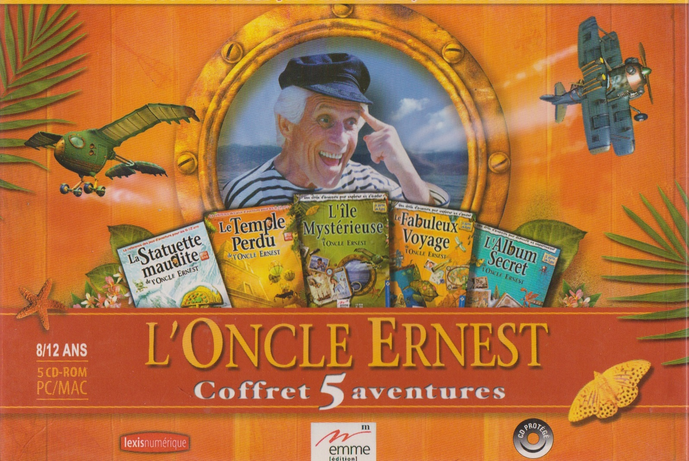
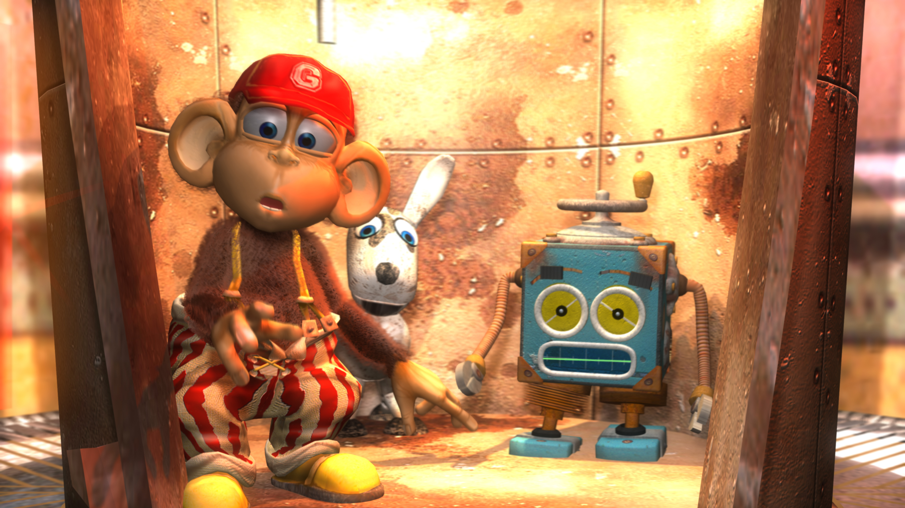
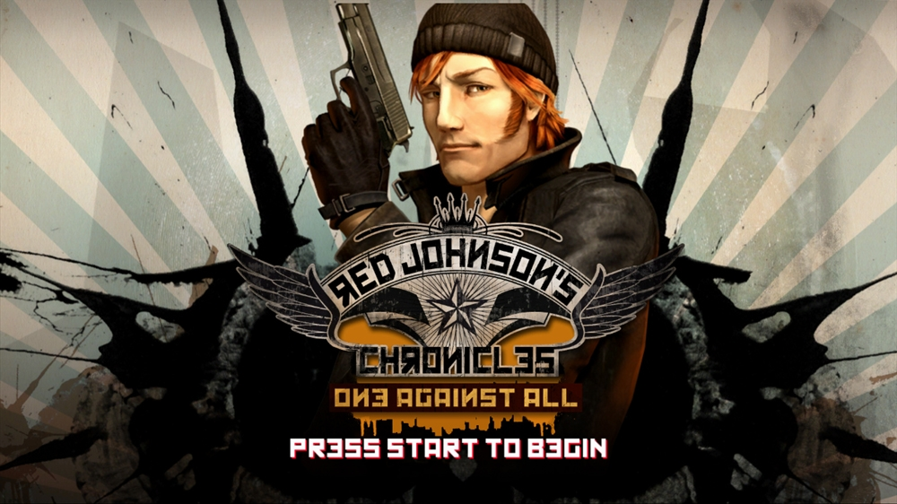
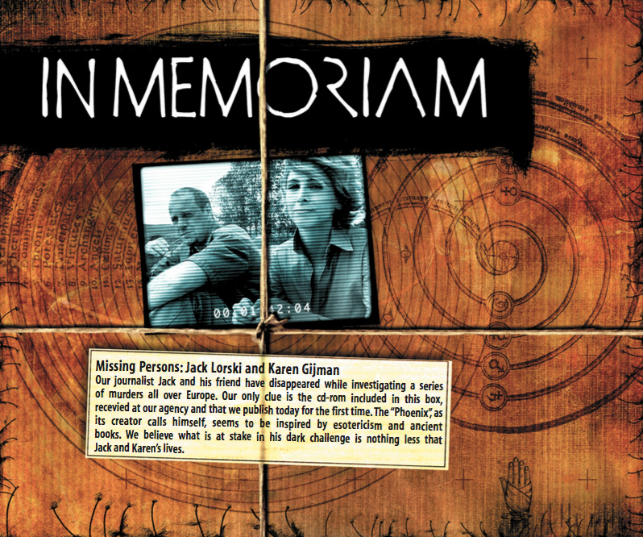
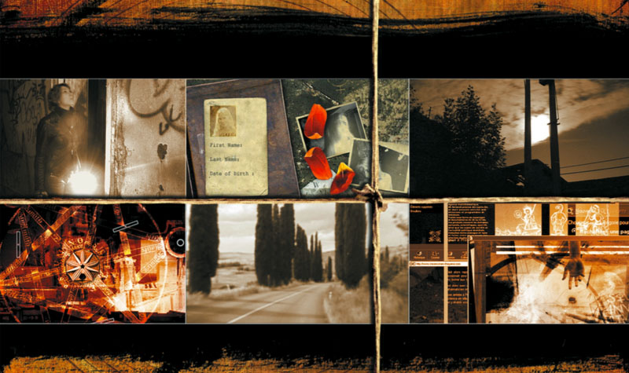
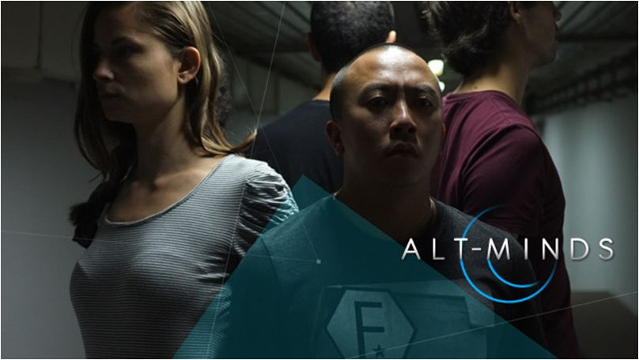

PORTRAIT
Les jeux PC des aventures de l'oncle Ernest ont été réalisés et scénarisés par Eric Viennot au sein du studio Lexis Numérique.Formation
Eric Viennot est né le 10 mars 1960 à Lyon.
Pendant ses études d’arts plastiques à l’Université Paris 1, Eric Viennot se passionne pour l’art contemporain, en particulier l’art minimaliste et le land art (Carl Andre, Walter de Maria, Richard Long…).
Il commence à cette époque une démarche artistique très influencée par ces mouvements et participe, au sein du Groupe Equipage 10, à plusieurs expositions à travers l’Europe. Il crée des installations en mixant plusieurs médias comme la sculpture, la peinture, la photographie et la vidéo.
A la fin des années 80, il va se passionner pour les débuts de l’infographie. Il se forme alors sur Amiga 500 puis Amiga 2000 à l’image de synthèse et fonde en 1990, avec des proches, le studio Lexis Numérique.
Les aventures de l'oncle Ernest
Eric Viennot commence sa carrière de game designer en créant les Aventures de l’Oncle Ernest. Traduite dans plus de 15 langues, cette série remporte un grand succès et de nombreux prix en France et à l’étranger. Elle permet au studio Lexis Numérique, fondé en 1990, de se développer et de passer en quelques années de 5 à plus de 50 employés au début des années 2000.

Elle sera déclinée ensuite en une sorte de spin off intitulé La Boite à Bidules, destinée aux plus jeunes. Cette série met en scène 4 personnages attachants, Gus, Bébert, Léonie et Toto, dont les aventures se déroulent à l’intérieur d’une boite étonnante, inventée dans les années 50 par l’Oncle Ernest.

Eric Viennot continuera de diriger jusqu'en 2014 Lexis Numérique. Plus de 8 millions de jeux seront vendus par le studio pendant cette période. En plus des créations citées ci-dessus et ci-dessous, on doit à Lexis un grand nombre de productions pour la jeunesse, parmi lesquelles la célèbre série Alexandra Ledermann, développée pour Ubisoft mais également Itacante la Cité des robots, La Belle ou la Bête, ou encore la série les Pooyoos. Le studio travaille en partenariat avec différents éditeurs (Disney, Ubisoft, Emme, Mindscape…) à l’adaptation en jeux vidéo de licences connues, venues du cinéma, du livre de jeunesse ou de la BD : Les aventures du Poisson Arc-en-ciel, E.T l’extraterrestre, Le livre de la Jungle, Boule et Bill, C’est pas sorcier, etc.
Mais Lexis est également connu pour avoir créé des concepts de jeux originaux, souvent primés comme Expérience 112 (2008) ou la série Red Johnson’s Chronicles (2011).

In Memoriam
Avec In Memoriam, édité par Ubisoft en 2003, Eric Viennot se lance pour la première fois dans la conception d’un jeu destiné aux adultes. Ce thriller interactif est le premier jeu en réalité alternée (alternate reality game) diffusé en Europe. Ce genre, tout nouveau à cette époque, et dont Eric Viennot est l’un des pionniers, place le joueur au centre du récit, en en faisant l’un des acteurs de l’histoire.

Il utilise pour cela un ensemble de médias, imbriqués les uns aux autres, pour créer un dispositif cohérent : séquences de films, sites internet, emails, mini-jeux, et même sms, ou appels téléphoniques. Dans In Memoriam, le joueur enquête sur les traces d’un tueur en série, dont il doit tenter de décrypter « l’oeuvre interactive » macabre avec laquelle il nargue la police. Le succès est au rendez-vous tant en Europe, où il se vendra à plus de 250 000 exemplaires, qu’aux Etats-Unis, où il sortira sous le titre Missing since january. Un second volet intitulé In Memoriam Le dernier rituel (Evidence aux US), sortira en 2006.

Alt Minds
Après la série In Memoriam, Eric Viennot continue à explorer la voie des jeux transmédia qu’il a contribué à populariser. Il travaille ainsi plusieurs années sur Alt-Minds qui sortira en 2012. Entre série TV et jeu, cette oeuvre hybride invite le public à participer pendant 8 semaines à une immense enquête interactive, avec des prolongements dans l’espace réel. Certains journalistes ont évoqué d’ailleurs la parenté avec PokemonGo, lancé 4 ans plus tard, puisque certaines phases de collectes d’éléments du jeu dans la réalité ne sont pas sans rappeler le jeu créé par Niantic.

A partir de 2014, Eric Viennot travaille en tant qu’auteur free lance. Il se consacre à la conception d’un nouveau jeu intitulé Unknown et à plusieurs projets de documentaires transmédia utilisant notamment la réalité virtuelle.
Eric Viennot est décédé en 2022 à l'âge de 62 ans. Ce site lui est dédié.
Prix et distinctions
- Prix Möbius France 1998- Prix SACD 2003 de la création interactive
- Parrain de la seconde promotion de l’Enjmin (Ecole nationale du jeu et des média interactifs)
- Chevalier des Arts et Lettres (2007)